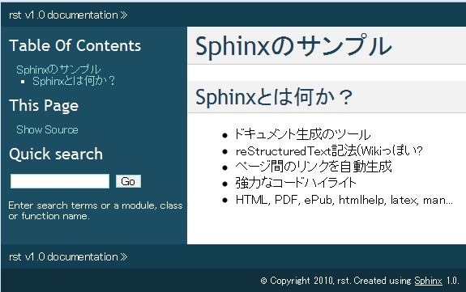

Sphinxからプレゼンテーションスライドを作ってみた¶
いままで「おまえだれよ」が出てきた回数を（ｒｙ¶
おまえだれよ¶
- 清水川というのよ
- フリーランスなのよ
- http://清水川.jp/ @shimizukawa
- Sphinxでドキュメント書いてRailsで実装
- Sphinx系, Zope/Plone系, pyspa系, XP系
- Python, Rails, 昔はC++/C/8086


電子書籍に電子サインもらた！¶
@t_wada氏とツーショット！¶
(´･ω･`)¶
イベントのお知らせ¶
毎月勉強会などをやってます。
- 2/12(土) Sphinx+翻訳ハッカソン
- 2/1(火) エキPy読書会08
- 3/4(金) OSCでSphinxセミナー
- 3/中旬(予定) Python mini Hack-a-thon
ATNDで探してね
スライド表示の例¶
- 箇条書き
- 番号付き箇条書き
- http://sphinx-users.jp/
強調 , エモーション
リテラル , リテラル
command
スライド切替エフェクト¶
種類
- スライド: 横にslide
- フェード: fade
- フェード2: fadeScale
- 上からフェード: fadeScaleFromUp
- 拡大: fadeScaleFromUpTransparent
センタリング¶
Textと画像のレイアウト例¶
Sphinxのサンプル
=================
Sphinxとは何か？
-----------------
* ドキュメント生成のツール
* reStructuredText記法(Wikiっぽい?
* ページ間のリンクを自動生成
* 強力なコードハイライト
* HTML, PDF, ePub, htmlhelp, latex, man...
